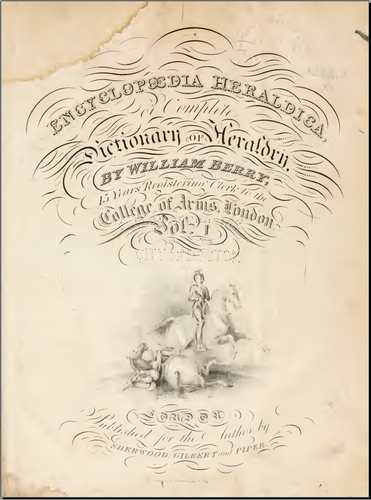

Encyclopaedia Heraldica, or Complete Dictionary of Heraldry, William BERRY, Sherwood Gilbert and Piper, 1828-40??
Reasonably clear reproduction of a very comprehensive work, although it can be difficult to find things, printed page numbers are rare and the contents page does not show page numbers anyway. Family names are scattered in several different sections and addenda. Despite this, there is a potentially useful cross reference sections that links ordinaries and charges with family names, e.g. you can answer questions such as "which armigers have a chevron sable"?
Fully text searchable, OCR accuracy 95%+, some pages and especially the plates in Volume III are quite faded.
To assist in using this work I have created a new table of contents, the numbers below being the PDF version page numbers. (Note volume II has a slightly different file name structure)
Volume I: ( encyclopaediaher01berr ) Preface 9 Introduction 14 Contents (not by page) 19 Dictionary of Heraldry (Glossary) 23 - 583 (The Following 3 sections comprise "Glover's Ordinary of Arms") Arms Cross Reference 585 - 759 (this has a separate run of printed page numbers of 1 - 176) Index to Ordinaries 760 - 806 (links family names to the printed page numbers above) Index to Charges (Links charges to the printed page numbers above) Mottoes 809 Appendix and various addenda (including to the Glossary) 827 - 863 Volume II.i ( encyclopdiaher21berr ) A Dictionary of Arms, ABACONE to KARNADY 6 - 1004 Volume II.ii ( encyclopdiaher22berr ) A Dictionary of Arms, KARR - ZUSTO 6 - 934 Appendix 936 - 1115 Addenda & Errata 1116 - 1126 (I'm not clear what the difference is between this and the previous section) Volume III ( encyclopaediaher03berr ) Index to Plates (by Plate No.) 9 - 28 Plates I to CXI (some rather faded ) 29 - 257 Arms of Subscribers 259 - 307 Volume IV ( encyclopaediaher04berr ) Preface 8 Dictionary of Arms AARON - ZYMON 10 - 594 Description of the Arms of Subscribers 595 New Peers Since Publication 600 New Baronets Since Publication 611 Plates (arms of subscribers) 619 - 624